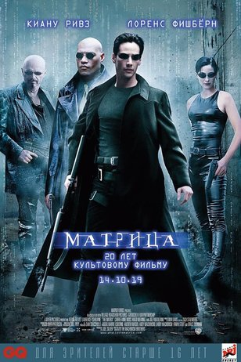
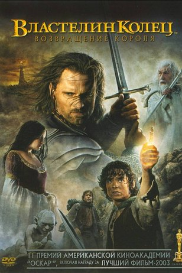
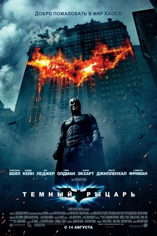

OSCAR
Жанр: Приключения с 1991г. по 2020г.



Название фильма
Год
Колличество оскаров
Танцующий с волками
1991г
7
Терминатор 2: Судный день
1992г
4
Непрощенный
1993г
4
Парк Юрского периода
1994г
3
Скорость
1995г
2
Фарго
1997г
2
Спасти рядового Райана
1999г
5
Матрица
2000г
4
Гладиатор
2001г
5
Властелин колец: Братство кольца
2002г
2
Властелин колец: Две крепости
2003г
2
Хозяин морей: На краю Земли
2004г
2
Властелин колец: Возвращение короля
2004г
11
Кинг-Конг
2006г
3
Маленькая мисс Счастье
2007г
2
Темный рыцарь
2009г
2
Аватар
2010г
3
Алиса в стране чудес
2011г
2
Начало
2011г
4
Хранитель времени
2012г
5
Жизнь Пи
2013г
4
007: Координаты «Скайфолл»
2013г
1
Интерстеллар
2015г
1
Выживший
2016г
3
Безумный Макс: Дорога ярости
2016г
6
Черная Пантера
2019г
3
1917
2020г
3
Назад
Ильин Андрей Юрьевич ИКБО-20-19